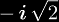
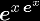

The self-power function is a great way to start learning about tetration. It is simply defined as xx, but it is also a form of tetration, because xx = 2x. However, even this simple function displays some aspects of tetration, for example, it grows faster than any power function and faster than any exponential function. One of the first steps that most people take before considering tetration in general is to first think about xx, and then go on to generalize to the next logical step, which is tetration.
One prominent property of the self-power function is that its graph is only real-valued for positive inputs, which means that negative inputs create complex-valued outputs. To see why this is, let us consider when x = -1/2: when we substitute this in the definition we get (-1/2)(-1/2) =  which is an imaginary number.
Although this is one of the simplest cases of tetration, it is a non-trivial case, since the immediate answer to a series expansion for xx would be:
which is not a Taylor series in x. The derivatives of xx at 1 give the exponential coefficients (1, 1, 2, 3, 8, 10, 54, -42, 944, ...) which is (A005727). In Sloane's database entry for this sequence, Jovovic gives the closed form:
This leads to the question: why is it so complicated? which also leads to whether or not it would be different if the function was not xx, but what if the function was  instead? The derivatives of this function at 0 yields a similar set of exponential coefficients (1, 1, 3, 10, 41, 196, 1057, ...) which is (A000248). This database entry gives the closed form:
showing that a simpler form of the first expansion does exist.
|
Copyright © 2010 Andrew Robbins ( |
|